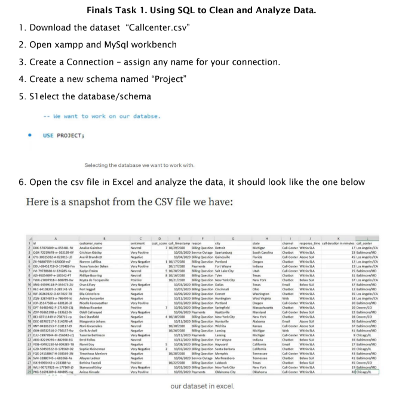

In this task, I worked on data preparation and analysis using SQL to organize and clean raw data for accurate analysis. The activity focused on fixing errors, correcting data formats, and improving data consistency using SQL queries and functions.
Through this activity, I learned how SQL can be used to clean, manage, and analyze data efficiently. I also understood the importance of organized and accurate data in producing reliable results.
Back to Projects Show Project